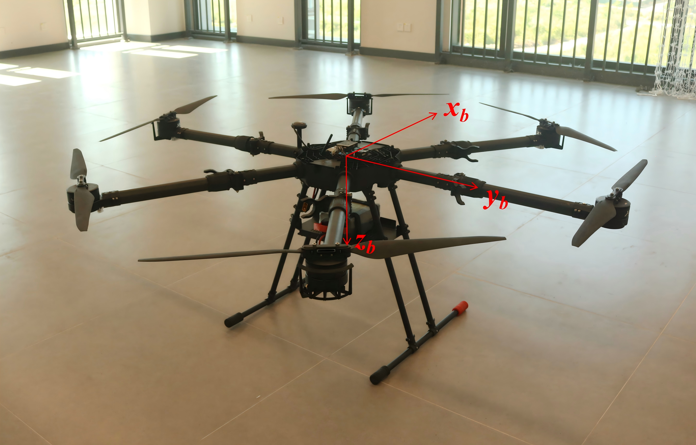

Project
High Performance CAAC Training Drones

Overview
High-performance flight controllers are essential for industrial UAV applications, enabling precise, reliable, and real-time control under complex operating conditions. For CAAC-compliant training, the need for user-friendly operation, enhanced safety assurance, and robust wind resistance makes the development of a high-performance flight control system even more demanding. As such, our team develop fully customized flight control system for CAAC training drones, featured by high flight stability and superior hovering accuracy during wind gust with speed up to 10m/s.
Key Capabilities
RTK Positioning
Centimeter-level positioning accuracy with RTK (Real-Time Kinematic) units.
Stationary Lock
Superior position hold accuracy during hovering and fast rotation.
Hands-free Safety Guarantee
Smooth switching between altitude and position modes. Instant fail-safe engagement during hands-off.
Performance
Demonstrations
The videos below showcase high flight stability, precise hovering accuracy under wind gusts, and smooth user operation. Click any video to start playback.